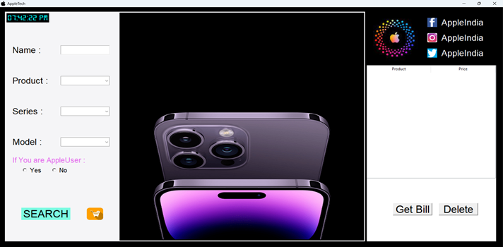

Projects
I
single-handedly developed a Python project from inception to completion. Tasked with creating a dynamic
inventory management system for a local business, I utilized my Python proficiency to design, code, and
implement the entire solution. Leveraging Flask for the backend and HTML/CSS for the frontend, I created a
user-friendly interface with functionalities such as product tracking, order management, and real-time
inventory updates. This solo endeavor not only showcased my technical prowess in Python but also allowed me
to refine my problem-solving skills and gain a comprehensive understanding of full-stack development.

I
Moreover, the experience of managing the project from inception to completion provided invaluable insights into project management and time management.
Balancing the demands of coding with effective communication and collaboration, I ensured that the project progressed smoothly
and met the expectations of stakeholders.Throughout this solo endeavor, I not only honed my technical prowess but also
cultivated essential soft skills such as adaptability, resilience, and effective communication. The satisfaction of
delivering a fully functional inventory management system to the local business was not just a testament to my
technical abilities but also a validation of my commitment to continuous improvement and excellence.